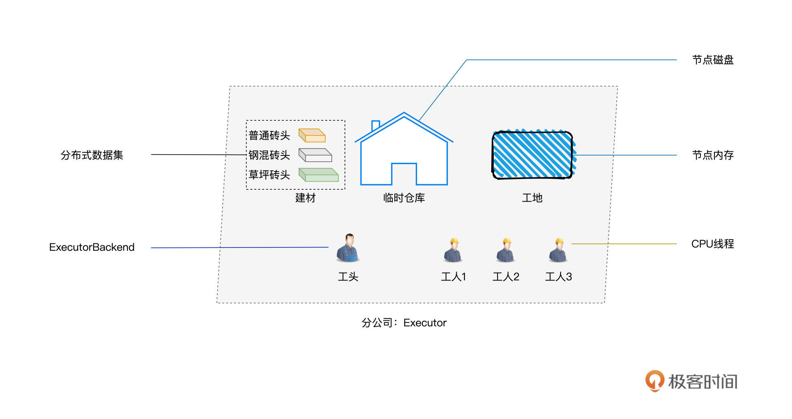
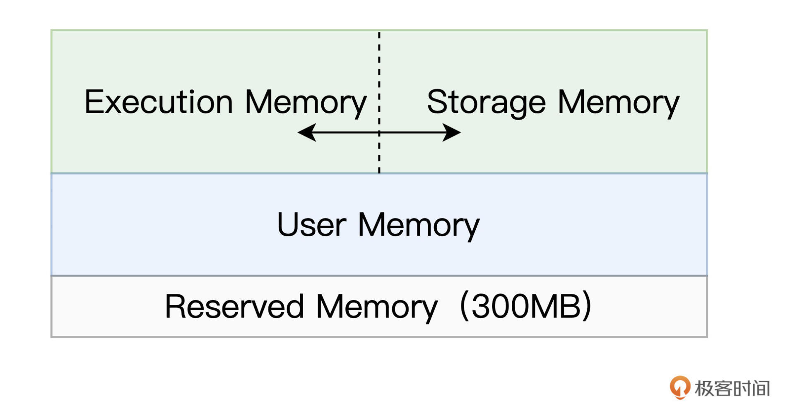
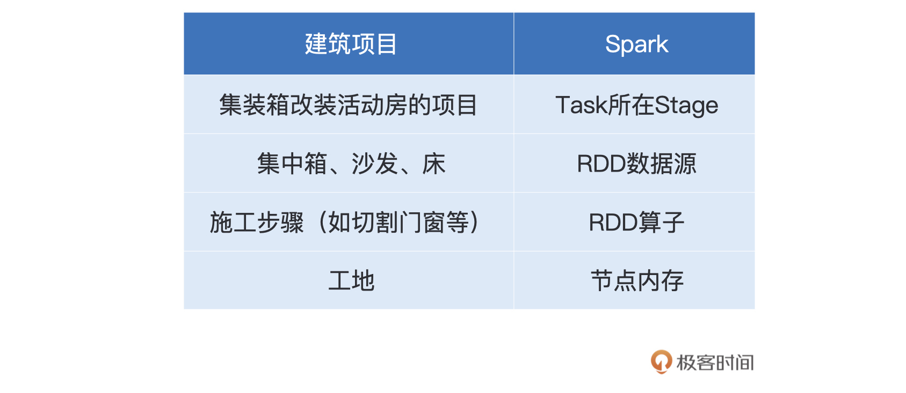
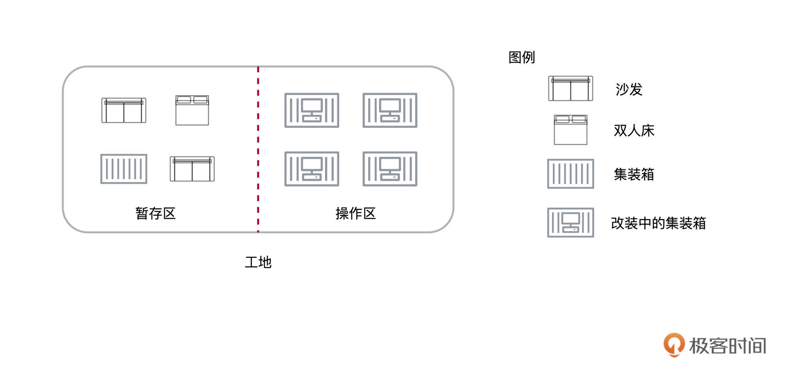
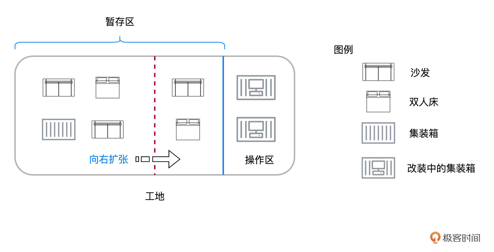
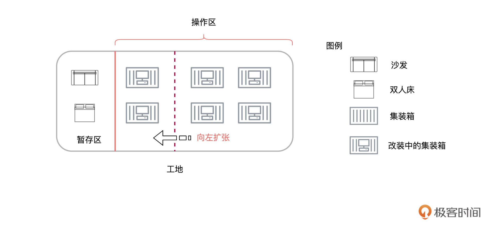
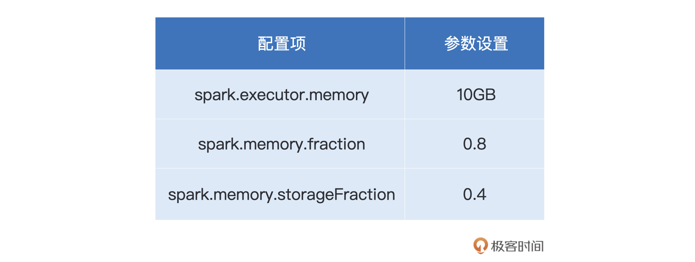

- 00 开篇词 入门Spark，你需要学会“三步走”.md
- 01 Spark：从“大数据的Hello World”开始.md
- 02 RDD与编程模型：延迟计算是怎么回事？.md
- 03 RDD常用算子（一）：RDD内部的数据转换.md
- 04 进程模型与分布式部署：分布式计算是怎么回事？.md
- 05 调度系统：如何把握分布式计算的精髓？.md
- 06 Shuffle管理：为什么Shuffle是性能瓶颈？.md
- 07 RDD常用算子（二）：Spark如何实现数据聚合？.md
- 08 内存管理：Spark如何使用内存？.md
- 09 RDD常用算子（三）：数据的准备、重分布与持久化.md
- 10 广播变量 & 累加器：共享变量是用来做什么的？.md
- 11 存储系统：数据到底都存哪儿了？.md
- 12 基础配置详解：哪些参数会影响应用程序稳定性？.md
- 13 Spark SQL：让我们从“小汽车摇号分析”开始.md
- 14 台前幕后：DataFrame与Spark SQL的由来.md
- 15 数据源与数据格式：DataFrame从何而来？.md
- 16 数据转换：如何在DataFrame之上做数据处理？.md
- 17 数据关联：不同的关联形式与实现机制该怎么选？.md
- 18 数据关联优化：都有哪些Join策略，开发者该如何取舍？.md
- 19 配置项详解：哪些参数会影响应用程序执行性能？.md
- 20 Hive + Spark强强联合：分布式数仓的不二之选.md
- 21 Spark UI（上）：如何高效地定位性能问题？.md
- 22 Spark UI（下）：如何高效地定位性能问题？.md
- 23 Spark MLlib：从“房价预测”开始.md
- 24 特征工程（上）：有哪些常用的特征处理函数？.md
- 25 特征工程（下）：有哪些常用的特征处理函数？.md
- 26 模型训练（上）：决策树系列算法详解.md
- 27 模型训练（中）：回归、分类和聚类算法详解.md
- 28 模型训练（下）：协同过滤与频繁项集算法详解.md
- 29 Spark MLlib Pipeline：高效开发机器学习应用.md
- 30 Structured Streaming：从“流动的Word Count”开始.md
- 31 新一代流处理框架：Batch mode和Continuous mode哪家强？.md
- 32 Window操作&Watermark：流处理引擎提供了哪些优秀机制？.md
- 33 流计算中的数据关联：流与流、流与批.md
- 34 Spark + Kafka：流计算中的“万金油”.md
- 用户故事 小王：保持空杯心态，不做井底之蛙.md
- 结束语 进入时间裂缝，持续学习.md
08 内存管理：Spark如何使用内存？
你好，我是吴磊。
在[第6讲]，我们拜访了斯巴克建筑集团的分公司，熟悉了分公司的办公环境与人员配置，同时用“工地搬砖的任务”作类比，介绍了Spark Shuffle的工作原理。
今天这一讲，我们再次来到分公司，去看看斯巴克公司都在承接哪些建筑项目，以及这些项目是如何施工的。通过熟悉项目的施工过程，我们一起来学习Spark的内存管理。

相比其他大数据计算引擎，关于Spark的特性与优势，想必你听到最多的字眼，就是“内存计算”。合理而又充分地利用内存资源，是Spark的核心竞争力之一。因此，作为开发者，我们弄清楚Spark是如何使用内存的，就变得非常重要。
好啦，闲言少叙，请你戴好安全帽，跟我一起再次去拜访斯巴克集团分公司吧。不过，在正式“拜访”之前，我们还有一项准备工作要做，那就是先了解清楚Spark的内存区域是怎样划分的。
Spark内存区域划分
对于任意一个Executor来说，Spark会把内存分为4个区域，分别是Reserved Memory、User Memory、Execution Memory和Storage Memory。

其中，Reserved Memory固定为300MB，不受开发者控制，它是Spark预留的、用来存储各种 Spark 内部对象的内存区域；User Memory用于存储开发者自定义的数据结构，例如RDD算子中引用的数组、列表、映射等等。
Execution Memory用来执行分布式任务。分布式任务的计算，主要包括数据的转换、过滤、映射、排序、聚合、归并等环节，而这些计算环节的内存消耗，统统来自于Execution Memory。
Storage Memory用于缓存分布式数据集，比如RDD Cache、广播变量等等。关于广播变量的细节，我们留到第10讲再去展开。RDD Cache指的是RDD物化到内存中的副本。在一个较长的DAG中，如果同一个RDD被引用多次，那么把这个RDD缓存到内存中，往往会大幅提升作业的执行性能。我们在这节课的最后会介绍RDD Cache的具体用法。
不难发现，Execution Memory和Storage Memory这两块内存区域，对于Spark作业的执行性能起着举足轻重的作用。因此，在所有的内存区域中，Execution Memory和Storage Memory是最重要的，也是开发者最需要关注的。
在 Spark 1.6 版本之前，Execution Memory 和 Storage Memory的空间划分是静态的，一旦空间划分完毕，不同内存区域的用途与尺寸就固定了。也就是说，即便你没有缓存任何 RDD 或是广播变量，Storage Memory 区域的空闲内存也不能用来执行映射、排序或聚合等计算任务，宝贵的内存资源就这么白白地浪费掉了。
考虑到静态内存划分的弊端，在 1.6 版本之后，Spark 推出了统一内存管理模式，在这种模式下，Execution Memory 和 Storage Memory 之间可以相互转化。这是什么意思呢？接下来，我们一起走进斯巴克集团分公司，看看不同内存区域相互转化的逻辑。
不同内存区域的相互转化
刚一走进分公司的大门，我们就能看到工人们在工地上如火如荼的忙碌景象。走近一问，才知道他们承接了一个“集装箱改装活动房”的建筑项目。顾名思义，这个项目的具体任务，就是把集装箱改装成活动房。
活动房的制作过程并不复杂，只需一系列简单的步骤，就能把集装箱改装为小巧而又别致的活动房，这些步骤包括清洗、切割开窗、切割开门、刷漆、打隔断、布置家居、装饰点缀。活动房的制作在工地上完成，成功改装的活动房会被立即拉走，由货运卡车运往集团公司的物流集散地。
好了，介绍完集装箱改装活动房的项目，我们必须要交代一下这个项目与Spark之间的关联关系。毕竟，再有趣的故事，也是用来辅助咱们更好地学习Spark嘛。
项目中涉及的原材料、施工步骤与Spark之间的类比关系，我把它整理到了下面的这张表格中：- 
从表中可以看到，集装箱相当于是RDD数据源，而切割门窗等施工步骤，对应的正是各式各样的RDD算子。而工地用于提供施工场所，这与计算节点内存提供数据处理场所的作用如出一辙。这么看下来，集装箱改装活动房的项目，就可以看作是Spark作业，或者说是Spark应用。
接下来，我们来考察一下这个项目的施工过程。走近工地，我们发现工地上赫然划着一条红色的虚线，把工地一分为二。虚线的左侧，堆放着若干沾满泥土的集装箱，而工地的右侧，则是工人们在集装箱上叮叮当当地做着改装，有的集装箱已经开始布置家居，有的还在切割门窗。

看到地上的红线，我们不免好奇，走近前去问，工头为我们道清了原委。
按理说，像集装箱、家具这些生产资料都应该放在临时仓库（节点硬盘）的，工地（节点内存）原则上只用来进行改装操作。不过，工地离临时仓库还有一段距离，来回运输不太方便。
为了提升工作效率，工地被划分成两个区域。在上图中，红线左边的那块地叫作暂存区（Storage Memory），专门用来暂存建筑材料；而右边的那部分叫作操作区（Execution Memory），用来给工人改装集装箱、制作活动房。
之所以使用虚线标记，原因就在于，两块区域的尺寸大小并不是一成不变的，当一方区域有空地时，另一方可以进行抢占。
举例来说，假设操作区只有两个工人（CPU 线程）分别在改装集装箱，此时操作区空出来可以容纳两个物件的空地，那么这片空地就可以暂时用来堆放建筑材料，暂存区也因此得到了实质性的扩张。

不过，当有足够的工人可以扩大生产的时候，比如在原有两个工人在作业的基础上，又来了两个工人，此时共有4个工人可以同时制作活动房，那么红色虚线到蓝色实线之间的任何物件（比如上图的沙发和双人床），都需要腾出到临时仓库，腾空的区域交给新来的两个工人改装集装箱。毕竟，改装集装箱、制作活动房，才是项目的核心任务。

相反，如果暂存区堆放的物件比较少、留有空地，而工人又比较充裕，比如有6个工人可以同时进行改装，那么此时暂存区的空地就会被操作区临时征用，给工人用来制作活动房。这个时候，操作区实际上也扩大了。
当有更多的物件需要堆放到暂存区的时候，扩张的操作区相应地也需要收缩到红色虚线的位置。不过，对于红色实线与红色虚线之间的区域，我们必须要等到工人们把正在改装的活动房制作完毕（Task Complete），才能把这片区域归还给暂存区。
好啦，活动房的项目到这里就介绍完了。不难发现，操作区类比的是 Execution Memory，而暂存区其实就是 Storage Memory。Execution Memory 和 Storage Memory 之间的抢占规则，一共可以总结为 3 条：
- 如果对方的内存空间有空闲，双方可以互相抢占；
- 对于Storage Memory抢占的Execution Memory部分，当分布式任务有计算需要时，Storage Memory必须立即归还抢占的内存，涉及的缓存数据要么落盘、要么清除；
- 对于Execution Memory抢占的Storage Memory部分，即便Storage Memory有收回内存的需要，也必须要等到分布式任务执行完毕才能释放。
介绍完Execution Memory与Storage Memory之间的抢占规则之后，接下来，我们来看看不同内存区域的初始大小是如何设置的。
内存配置项
总体来说，Executor JVM Heap的划分，由图中的3个配置项来决定：

其中spark.executor.memory是绝对值，它指定了Executor进程的JVM Heap总大小。另外两个配置项，spark.memory.fraction和spark.memory.storageFraction都是比例值，它们指定了划定不同区域的空间占比。
spark.memory.fraction用于标记Spark处理分布式数据集的内存总大小，这部分内存包括Execution Memory和Storage Memory两部分，也就是图中绿色的矩形区域。（M – 300）* （1 – mf）刚好就是User Memory的区域大小，也就是图中蓝色区域的部分。
spark.memory.storageFraction则用来进一步区分Execution Memory和Storage Memory的初始大小。我们之前说过，Reserved Memory固定为300MB。（M – 300）* mf * sf是Storage Memory的初始大小，相应地，（M – 300）* mf * （1 – sf）就是Execution Memory的初始大小。
熟悉了以上3个配置项，作为开发者，我们就能有的放矢地去调整不同的内存区域，从而提升内存的使用效率。我们在前面提到，合理地使用RDD Cache往往能大幅提升作业的执行性能，因此在这一讲的最后，我们一起来学习一下RDD Cache的具体用法。
RDD Cache
在一个Spark作业中，计算图DAG中往往包含多个RDD，我们首先需要弄清楚什么时候对哪个RDD进行Cache，盲目地滥用Cache可不是明智之举。我们先说结论，当同一个RDD被引用多次时，就可以考虑对其进行Cache，从而提升作业的执行效率。
我们拿第1讲中的Word Count来举例，完整的代码如下所示：
import org.apache.spark.rdd.RDD
val rootPath: String = _
val file: String = s"${rootPath}/wikiOfSpark.txt"
// 读取文件内容
val lineRDD: RDD[String] = spark.sparkContext.textFile(file)
// 以行为单位做分词
val wordRDD: RDD[String] = lineRDD.flatMap(line => line.split(" "))
val cleanWordRDD: RDD[String] = wordRDD.filter(word => !word.equals(""))
// 把RDD元素转换为（Key，Value）的形式
val kvRDD: RDD[(String, Int)] = cleanWordRDD.map(word => (word, 1))
// 按照单词做分组计数
val wordCounts: RDD[(String, Int)] = kvRDD.reduceByKey((x, y) => x + y)
// 打印词频最高的5个词汇
wordCounts.map{case (k, v) => (v, k)}.sortByKey(false).take(5)
// 将分组计数结果落盘到文件
val targetPath: String = _
wordCounts.saveAsTextFile(targetPath)
细心的你可能发现了，我们今天的代码，与第1讲中的代码实现不同。我们在最后追加了saveAsTextFile落盘操作，这样一来，wordCounts这个RDD在程序中被引用了两次。
如果你把这份代码丢进spark-shell去执行，会发现take和saveAsTextFile这两个操作执行得都很慢。这个时候，我们就可以考虑通过给wordCounts加Cache来提升效率。
那么问题来了，Cache该怎么加呢？很简单，你只需要在wordCounts完成定义之后，在这个RDD之上依次调用cache和count即可，如下所示：
// 按照单词做分组计数
val wordCounts: RDD[(String, Int)] = kvRDD.reduceByKey((x, y) => x + y)
wordCounts.cache// 使用cache算子告知Spark对wordCounts加缓存
wordCounts.count// 触发wordCounts的计算，并将wordCounts缓存到内存
// 打印词频最高的5个词汇
wordCounts.map{case (k, v) => (v, k)}.sortByKey(false).take(5)
// 将分组计数结果落盘到文件
val targetPath: String = _
wordCounts.saveAsTextFile(targetPath)
由于cache函数并不会立即触发RDD在内存中的物化，因此我们还需要调用count算子来触发这一执行过程。添加上面的两条语句之后，你会发现take和saveAsTextFile的运行速度明显变快了很多。强烈建议你在spark-shell中对比添加Cache前后的运行速度，从而直观地感受RDD Cache对于作业执行性能的提升。
在上面的例子中，我们通过在RDD之上调用cache来为其添加缓存，而在背后，cache函数实际上会进一步调用persist（MEMORY_ONLY）来完成计算。换句话说，下面的两条语句是完全等价的，二者的含义都是把RDD物化到内存。
wordCounts.cache
wordCounts.persist(MEMORY_ONLY)
就添加Cache来说，相比cache算子，persist算子更具备普适性，结合多样的存储级别（如这里的MEMORY_ONLY），persist算子允许开发者灵活地选择Cache的存储介质、存储形式以及副本数量。
Spark支持丰富的存储级别，每一种存储级别都包含3个最基本的要素。
- 存储介质：数据缓存到内存还是磁盘，或是两者都有
- 存储形式：数据内容是对象值还是字节数组，带 SER 字样的表示以序列化方式存储，不带 SER 则表示采用对象值
- 副本数量：存储级别名字最后的数字代表拷贝数量，没有数字默认为 1 份副本。
我把Spark支持的存储级别总结到了下表，其中打钩的地方，表示某种存储级别支持的存储介质与存储形式，你不妨看一看，做到心中有数。

通过上表对琳琅满目的存储级别进行拆解之后，我们就会发现，它们不过是存储介质、存储形式和副本数量这3类基本要素的排列组合而已。上表列出了目前Spark支持的所有存储级别，通过它，你可以迅速对比查找不同的存储级别，从而满足不同的业务需求。
重点回顾
今天这一讲，你需要掌握Executor JVM Heap的划分原理，并学会通过配置项来划分不同的内存区域。
具体来说，Spark把Executor内存划分为4个区域，分别是Reserved Memory、User Memory、Execution Memory和Storage Memory。
通过调整spark.executor.memory、spark.memory.fraction和spark.memory.storageFraction这3个配置项，你可以灵活地调整不同内存区域的大小，从而去适配Spark作业对于内存的需求。
再者，在统一内存管理模式下，Execution Memory与Storage Memory之间可以互相抢占，你需要弄清楚二者之间的抢占逻辑。总结下来，内存的抢占逻辑有如下3条：
- 如果对方的内存空间有空闲，双方可以互相抢占；
- 对于Storage Memory抢占的Execution Memory部分，当分布式任务有计算需要时，Storage Memory必须立即归还抢占的内存，涉及的缓存数据要么落盘、要么清除；
- 对于Execution Memory抢占的Storage Memory部分，即便Storage Memory有收回内存的需要，也必须要等到分布式任务执行完毕才能释放。
最后，我们介绍了RDD Cache的基本用法，当一个RDD在代码中的引用次数大于1时，你可以考虑通过给RDD加Cache来提升作业性能。具体做法是在RDD之上调用cache或是persist函数。
其中persist更具备普适性，你可以通过指定存储级别来灵活地选择Cache的存储介质、存储形式以及副本数量，从而满足不同的业务需要。
每课一练
好啦，这节课就到这里了，我们今天的练习题是这样的：
给定如下配置项设置，请你计算不同内存区域（Reserved、User、Execution、Storage）的空间大小。

欢迎你在评论区分享你的答案。如果这一讲对你有帮助，也欢迎你把这一讲分享给自己的朋友，我们下一讲再见。
© 2019 - 2023 Liangliang Lee. Powered by Vert.x and hexo-theme-book.